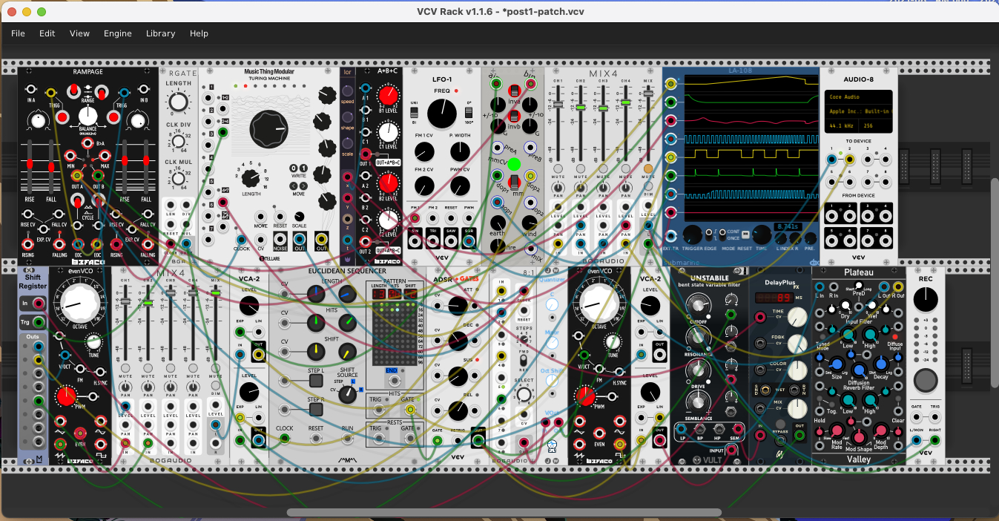
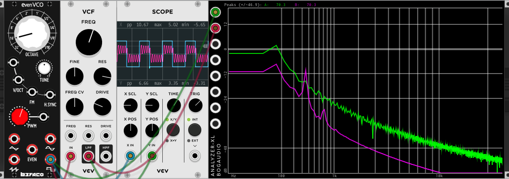

Audio Programming with C++ and VCV Rack
Are you curious about programming a computer to make music or other strange sounds? Or maybe you’re a seasoned pro that wants to get up to speed with the VCV Rack environment? Either way, you’ve stumbled into a better than bad place.
This article is the first in what will be an ongoing series about audio programming. The first handful of articles will be intended for those who are newer to audio programming but we will progress into much more interesting waters as we go. You can do all kinds of cool stuff with Rack (link, link, link, let Omri show you), but for our purposes at hand, it gives you a very nice laboratory in which to learn the ways of audio-programming and perform experiments in the arts of DSP wizardry.
In this article we will:
- See why VCV Rack is a great environment for experimenting
- Install VCV Rack
- Setup your development/build environment
- Build and test a module in VCV Rack
In the next article we will start looking at the code…
What is VCV Rack and why is it the perfect audio lab?
VCV Rack is an open-source (free!) virtual eurorack modular synthesizer. It has an open plugin library that hosts, as of today, 2,664 modules and it is pretty easy to write your own modules for it.
The perfect lab?
- It is complete
- From a synthesizer perspective:
- It has all of the core components of most systems ever made. period!
- From a lab / experimentation perspective:
- 
- It has visual analysis tools that can be used to measure and see what your code is doing: o-scopes, signal/logic analyzers, spectrum analyzers. I’ve had cases where there was a slight transient in my waveform that I didn’t see in the o-scope, but it was clear as day on the spectrum analyzer.
- It has function generators / oscillators that can be used as known test inputs to see how your module reacts to different waveforms and frequencies.
- There is quite a bit of DSP, MIDI, and other audio framework built into the core Rack libraries, so you don’t have to write it yourself or you have good examples to learn from.
- There are many plugins for reading/writing audio to the file system so you can use any materials you have and capture anything you create
- From a synthesizer perspective:
- It is free! Feel free to contribute $ or bug-fixes to Rack itself or one of the many module makers…
- It is a great collection of existing code to experiment with and learn from.
Install VCV Rack
The VCV Rack Manual is pretty complete and always getting better. The installation page has the program requirements and detailed installation instructions, but it boils down to:
- Download VCV Rack
- Install it:
- OSX: unzip and copy to Applications folder
- Linux: unzip and put it where ever
- Windows: run the installer
- (Optional) Create an account for the VCV Library
- Run Rack with the shortcut icon, where-ever those go on your system, or from the command line
- (Optional) Once you are in VCV Rack, login to the VCV Library from the Library menu item
- Start playing, or at least make sure you can make sound
Setup Your Development Environment
This doesn’t speak to the editor or terminal/shell program you use, so it really should be called “Setup Your Build Environment” where we will install all the needed build tools, libraries, and the Rack SDK.
Install Build Tools
Follow the guide in the manual to install the necessary build tools and libraries for your development system. You can stop when you get to the section labeled “Building Rack”.
Install VCV Rack SDK
Download the latest Rack SDK (it was 1.1.6 as of this writing) and unzip it to a directory of your choosing, let’s call this
Set the $RACK_DIR environment var
export RACK_DIR='<MY_RACKSDK_DIR>'You will probably want to add that to your shell config file (.zshrc, .bashrc, …) after you type it a couple times…
With that you are ready to test out your build system.
Test Your Development Environment
To test out your environment you’ll need to build a plugin. You can build either, or both of:
- the VCV Rack Fundamental plugin. Just follow the instructions in the manual
- build my HelloVCV plugin like this:
> # assuming that $RACK_DIR is set
> git clone git@github.com:dgbillotte/HelloVCV.git
> cd HelloVCV
> make install
> rack # or however you start VCV-RackBuilding HelloVCV is two steps quicker and will leave you with a simple and thoroughly documented module that you can use as a template to start playing with right away.
The Fundamental modules, on the other hand, are great examples of all kinds of techniques used in real-world DSP programming, but as such, are more complex and more difficult to digest at first.
If you start with HelloVCV, I highly encourage you to come back to the Fundamental modules in the future as they are a great model of the “VCV Rack” way of coding. The entire library of modules provides for great code reading.
Once the plugin is built and Rack is running, add one of your test modules from the plugin to the on-screen rack and test it out.
Start Playing…
If everything has worked, you now have a working audio-programming development laboratory. Go open up the HelloVCV.cpp file in my plugin or one of the module files in Fundamental and see what happens if you change stuff… Speaking of playing, while I was writing this I got carried away in Rack and made this:
Up Next…
In the next article I will go over:
- the main components you have to work with in Rack
- creating a plugin with the helper.py script
- and who knows what else
cheers,
Daniel